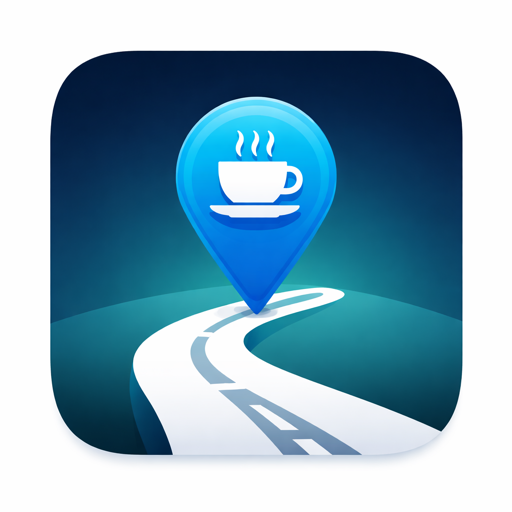

どのSA通る？
高速道路のSA・PA検索アプリ
このリンクは「どのSA通る？」で作った休憩プランです。アプリをお持ちの方は、リンクを押すとアプリで経路と休憩先が開きます。
このページが表示されたときは、アプリを入れてから（または最新にしてから）、もう一度リンクを押してください。
This is a break plan made with “どのSA通る？”, a Japan expressway rest stop app.
Install the app, then open the link again to see the route and break stops.